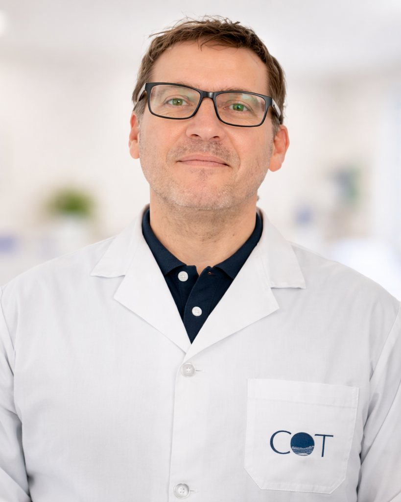

Ortopedia y Traumatología
Dr. Carlos A. Camburzano
Especialista en Cadera y Rodilla
Más de 18 años de experiencia en Ortopedia y Traumatología, con especialización en patologías de cadera y rodilla, reemplazos articulares y técnicas quirúrgicas asistidas por navegación y realidad aumentada.
- Especialista en Ortopedia y Traumatología desde 2008
- Más de 18 años de práctica traumatológica y quirúrgica
- Experiencia en navegación quirúrgica OrthAlign y realidad aumentada NextAR

Recuperar el movimiento empieza por un diagnóstico preciso
El dolor de cadera o rodilla puede afectar actividades cotidianas, la práctica deportiva y la calidad de vida. Una evaluación adecuada permite identificar su origen y definir el tratamiento más conveniente para cada paciente.
- Dolor de cadera y rodilla
- Lesiones deportivas
- Desgaste articular
Diagnóstico preciso
Evaluación clínica integral para identificar el origen del dolor, las limitaciones funcionales y las necesidades particulares de cada paciente.
Tratamiento personalizado
Alternativas conservadoras y quirúrgicas definidas según la edad, el nivel de actividad y las características de cada caso.
Cirugía especializada
Experiencia en cirugía de cadera y rodilla, reemplazos articulares y procedimientos asistidos por tecnologías de navegación y realidad aumentada.
Áreas de atención
-
Patología deportiva de cadera y rodilla
Evaluación y tratamiento de lesiones y patologías vinculadas a la actividad física y deportiva.
-
Reemplazos articulares de cadera y rodilla
Tratamiento quirúrgico mediante artroplastia de cadera y rodilla, incorporando sistemas actuales de navegación y asistencia intraoperatoria cuando el caso lo requiere.
-
Corrección de deformidades en pacientes jóvenes
Evaluación y tratamiento de alteraciones del eje de los miembros inferiores mediante procedimientos orientados a corregir deformidades y preservar la articulación.
-
Tratamiento conservador en adultos mayores
Abordaje de patologías traumatológicas y degenerativas mediante alternativas no quirúrgicas cuando están indicadas, buscando preservar la movilidad y calidad de vida.
Trayectoria profesional
Más de 18 años dedicados a la Ortopedia y Traumatología
Médico egresado de la Universidad Nacional de Rosario y especialista en Ortopedia y Traumatología desde 2008, certificado por el Colegio de Médicos de Rosario.
A lo largo de su trayectoria desarrolló actividad asistencial y formación continua en diferentes centros médicos de la región, incluyendo el Sistema Integrado de Emergencias Sanitarias de Rosario (SIES) y PAMI II, donde se desempeñó como médico traumatólogo de staff durante 15 años.
Actualmente desarrolla su actividad médica en el Centro de Ortopedia y Traumatología (COT) y forma parte del staff del Sanatorio Americano de Rosario desde 2011.
Participa además en actividades académicas y de formación dentro de la Asociación Rosarina de Ortopedia y Traumatología (AROT), formando parte de su actual Comisión Directiva.
Su práctica se concentra especialmente en cirugía de miembro inferior, cadera y rodilla, realizando procedimientos en diferentes centros de referencia de Rosario e incorporando tecnologías aplicadas a la cirugía, como navegación OrthAlign y realidad aumentada NextAR.
- 18+
- Años de experiencia
- 2008
- Especialista en Ortopedia y Traumatología
- 15
- Años como traumatólogo de staff en PAMI II
- AROT
- Miembro de Comisión Directiva
Puntos destacados de su trayectoria
- Médico egresado de la Universidad Nacional de Rosario.
- Especialista en Ortopedia y Traumatología desde 2008.
- Certificado por el Colegio de Médicos de Rosario.
- Experiencia profesional en el Sistema Integrado de Emergencias Sanitarias de Rosario (SIES).
- Médico traumatólogo de staff de PAMI II durante 15 años.
- Staff del Sanatorio Americano de Rosario desde 2011.
- Actividad médica actual en el Centro de Ortopedia y Traumatología (COT).
- Participación en la Comisión Directiva de la Asociación Rosarina de Ortopedia y Traumatología (AROT).
- Formación continua mediante cursos, rotaciones y actividades de perfeccionamiento en Argentina y el exterior.
- Experiencia en cirugía de cadera y rodilla asistida por navegación quirúrgica OrthAlign y realidad aumentada NextAR.
Agenda tu consulta
Atención especializada en Rosario para patologías de cadera y rodilla, lesiones deportivas, reemplazos articulares y tratamiento traumatológico del adulto.
Sanatorio Americano
- Miércoles
- 17:00 a 20:00 hs
- Viernes
- 12:00 a 17:00 hs
Centro de Ortopedia y Traumatología (COT)
- Lunes
- 08:00 a 12:00 hs
- Martes
- 14:30 a 17:00 hs
- Jueves
- 08:00 a 12:00 hs
Gestión de turnos
Solicitá tu turno de forma simple y rápida.
Solicitar turno ahora (se abre en una pestaña nueva)- Ciudad:
- Rosario, Santa Fe
- Especialidad:
- Ortopedia y Traumatología
- Foco:
- Cadera y rodilla